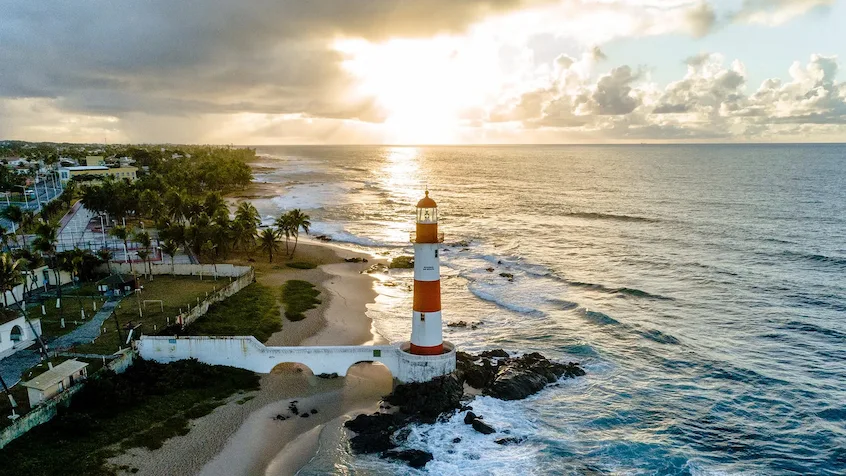

Anna Carolina Antunes
Sobre Mim
Meu nome é Anna Antunes. Sou da Bahia, mas atualmente moro em Mogi Mirim, São Paulo. Gosto muito de ler e costumo sempre ter um livro à mão. Para mim, a leitura é uma forma de conhecer novas histórias, descobrir diferentes perspectivas e também aproveitar um momento tranquilo do dia. Também gosto de jogos, pois adoro explorar novos cenários e descobrir coisas pelo caminho. Minha família é composta pelo meu marido e pela nossa gatinha Usopp. Espero continuar evoluindo nos estudos e, quem sabe, um dia me tornar uma excelente programadora!
Salvador, Bahia

Bahia é uma das 27 unidades federativas do Brasil. Banhada pelo Oceano Atlântico na costa mais extensa do país, está situada na Região Nordeste,[11] onde representa a maior extensão territorial, a maior população, o maior produto interno bruto e o maior número de municípios. A capital estadual é Salvador. Além dela, há outros municípios influentes na rede urbana baiana, como as capitais regionais, Feira de Santana, Vitória da Conquista, Barreiras, o bipolo Itabuna-Ilhéus e Juazeiro do bipolo com o município pernambucano de Petrolina.
Cursos Web Dev